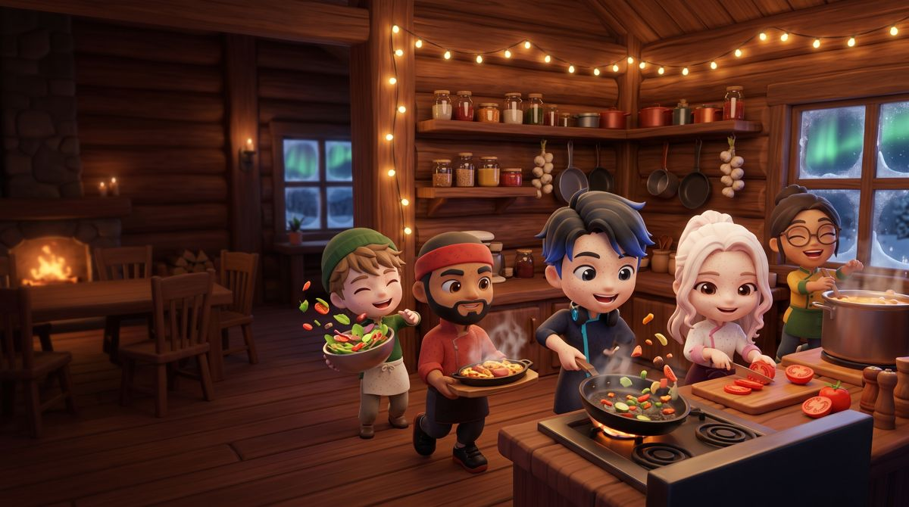

La cuisine la plus enneigée du monde
🍅
Coupez, cuisez, servez
Chaque ticket montre le plat fini et ses étapes : tout se comprend d'un coup d'œil.
👨🍳
Deux chefs, un joueur
Passez d'un chef à l'autre d'un geste pour préparer deux plats à la fois.
⭐
12 niveaux festifs
Du chalet à la patinoire puis au marché de Noël sous l'aurore boréale.
📈
Vos chefs progressent
Jusqu'au niveau 50, 5 compétences à répartir et de nouveaux pouvoirs à débloquer.

Rencontrez la squad
Chaque chef a son caractère et son pouvoir. Commencez avec Nilo et Kai, puis débloquez les autres en avançant dans l'aventure.
Nilo · TurboKai · Gros brasTheo · MijotageYuki · Étoile du serviceLina · Chrono gelé
Jouer sans pression
Aucun achat avec de l'argent réel : les pièces se gagnent en jouant. Les vidéos avec récompense sont toujours au choix du joueur. La progression peut être sauvegardée avec un code de secours.